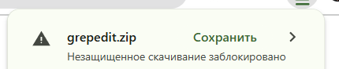
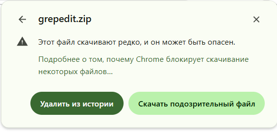
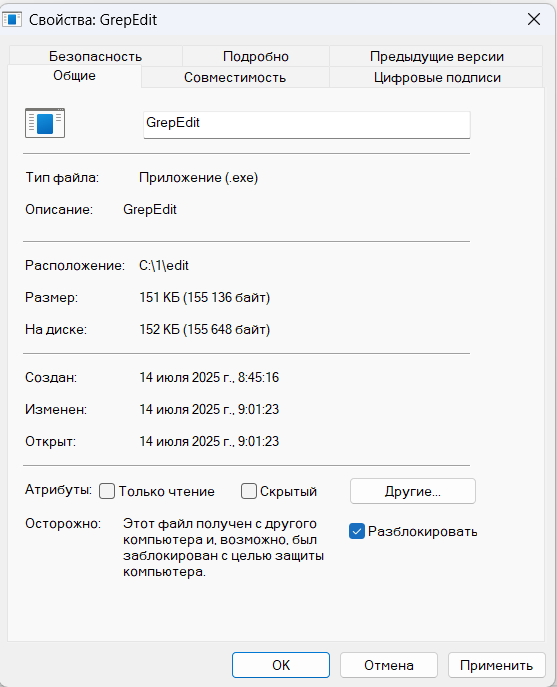
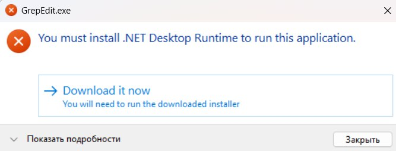
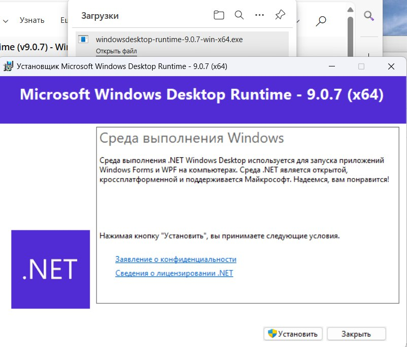
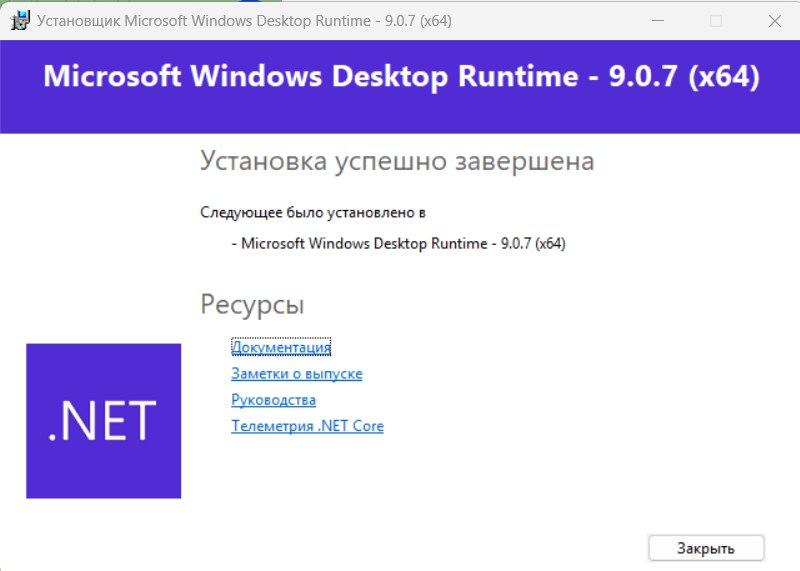
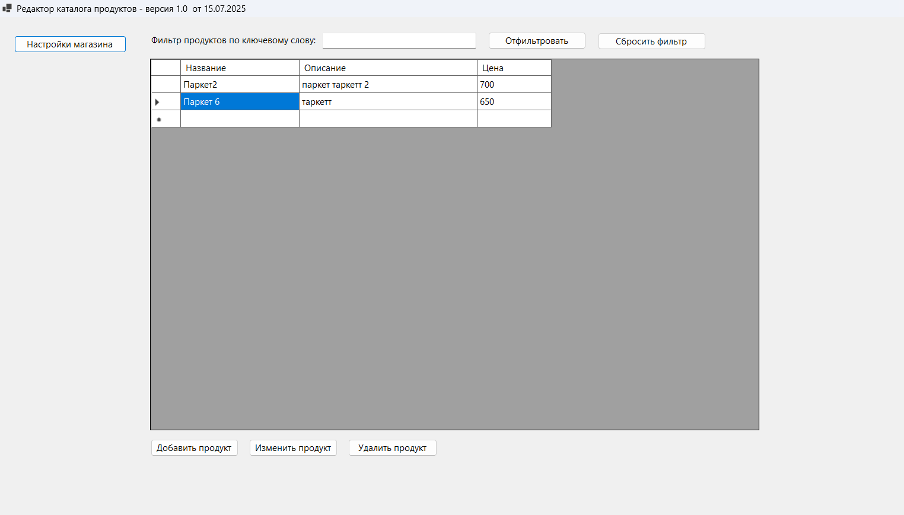
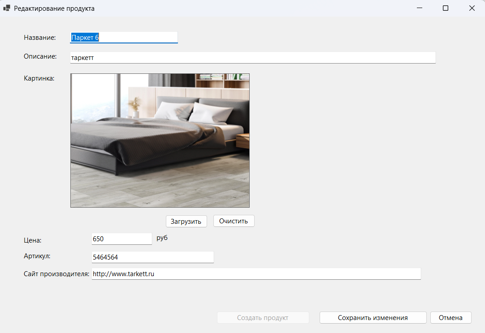

Редактор каталога
Видеоинструкция по установке и работе с программой
Для работы с системой скачайте программу grepedit и запустите ее под Windows на вашем ноутбуке
Скачать редактор каталога продуктов
Если антивирус заблокирует файл, удалите его и скачайте заново.
Вы также можете запросить у нас zip архив редактора
через телеграм по номеру +7-995-504-07-98.
Для этого установите приложение телеграм на компьютере или зайдите в телеграм
через сайт https://web.telegram.org/a/


Файлы программы лежат в зип архиве. Распакуйте его в любую папку.
Можно завести папку Grep на рабочем столе
Скопируйте зип архив в эту папку и нажмите на него правой кнопкой мыши,
далее пункт меню Извлечь все.
Перед запуском программы нажмите правой кнопкой на файл grepedit.exe и далее Свойства.
Разблокируйте программу галочкой внизу как показано на картинке

Если на компьютере не хватает компонентов, программа сама предложит их скачать с сайта Microsoft

Запустите файл установщика, который автоматически скачается и подтвердите установку

После успешной установки компонентов компьютер готов в работе редактора каталога.

Запустите повторно файл grepedit.exe
Откроется таблица текущих продуктов, она будет пустая. Для существующих компаний откроется каталог продуктов

Создавайте продукты, редактируйте, загружайте на них картинки
Все сразу станет доступно для поиска вашим покупателям

На главную